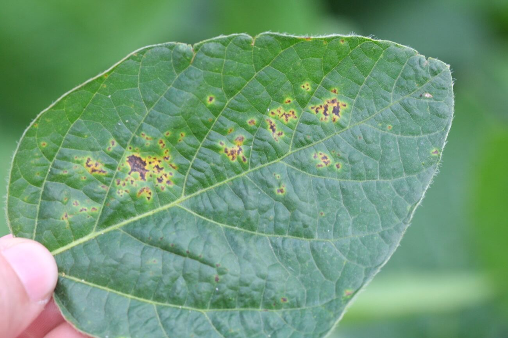

A comprehensive overview of the computer vision, deep convolutional neural networks, and Explainable AI (XAI) frameworks driving real-time crop diagnosis.
How a supported leaf photo is resized and classified by the trained MobileNetV2 model.
Farmers capture high-resolution RGB photographs using smartphones or handheld field scanners under varying sunlight and angles.
Images undergo CLAHE contrast enhancement, background soil segmentation, Gaussian noise filtering, and standardized 224x224 normalization.
Deep residual layers extract hierarchical spatial patterns: fine vein textures, angular lesion contours, chlorotic halos, and fungal pustules.
Multi-class probability distribution generates the primary disease class, confidence percentage, and secondary coinfection risks.
Agronomic decision-engine maps diagnosis to climate severity indexes and outputs chemical fungicide dosages & bio-organic alternatives.
Eliminating 'black-box' opacity through visual gradient heatmaps and explicit pathological reasoning.
Gradient-weighted Class Activation Mapping (Grad-CAM) illuminates the exact leaf coordinates the convolutional filters prioritized when diagnosing infection.
Differentiates viral enations from normal biological leaf venation.
Measures angularity of water-soaked spots to distinguish bacterial from fungal infection.
Quantifies loss of green chlorophyll spectrum in necrotic regions.

"The network identified Angular Water-Soaked Lesions as the 94.8% driver for Bacterial Blight classification."
Reported held-out test metrics for the trained model across its supported crop classes.
Random affine rotations (±30°), perspective distortion, synthetic solar flare simulation, and Gaussian blur prevent overfitting on specific camera sensors.
Farmer photos are strictly processed ephemerally on-device or encrypted in-transit with zero personal data harvesting, adhering to global open-data ethics.
Planned expansion towards multispectral drone NDVI scanning and high-resolution Sentinel-2 satellite soil moisture indexing.